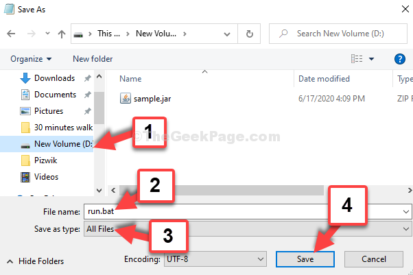
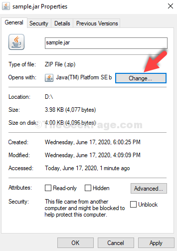
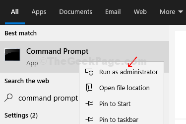

Unable To Run .JAR Files in Windows 10 / 11 ? Here’s the Solution#
May 28, 2022 By Madhuparna
https://thegeekpage.com/unable-to-run-jar-files-in-windows-10-heres-the-solution/#comment-161381
A JAR file is based on a Java archive file format that may include a Java program inside it. Although you can use a zip file extracting software like the 7zip to extract the .JAR files, it won’t allow you to run a compete Java app based on .JAR.
So, if you are facing an issue while opening a .jar file, you can try the below methods.
Table of Contents
[TOC]
Method 1 – Download and run jarfix#
Jatfix is a free utility which repairs jar files and let you run files which you are unable to run.
\1. Just go to this link and download jarfix.
2.Now, Install it after downloading .
Now, try again.
Method 2: By Creating a .bat File#
Step 1: Open notepad and type the below text on it:
java -jar sample.jar

*Note – Replace the highlighted portion with whatever is the name of your .jar file.
Step 2: Save the file with any name that suits you, in the same location where your .jar file is saved, followed by .bat extension.
For instance, here we named the file as run.bat and changed the Save as type to All Files.
Press the Save button.

Now, double-click on the run.bat file and your .jar file will open smoothly.

Method 3: By Downloading Java#
Step 1: Go to Java.com and download Java from the link
Step 2: On the website download page, click on the Download button in red to download the Java setup file.

Step 3: Once the setup is complete, go to the location where the .jar file is saved and double-click on it to run the file.

If it doesn’t open up try the 2nd method.
Method 4: Through Properties#
Step 1: Simply right-click on it and select Properties from the context menu.

Step 2: In the Properties window, click on Change.

Step 3: In the next window, click on More apps.

Step 4: Scroll down and click on Look for another app on this PC.

Step 5: It takes you to the File Explorer, click on the C drive shortcut and follow the below path step by step:
Double-click on Program Files (x86)
Double-click on Java
Double-click on jre1.8.0_251
Double-click on bin
Select javaw

Step 6: As you double-click on javaw, it takes you back to the Properties window. Click on Apply and then OK.

Your .jar file should open now. If it still doesn’t open, try the 3rd method.
Method 5: Using Command Prompt#
Step 1: Click on the Start button on your desktop and type Command Prompt in the search field. Right-click on the result and select Run as administrator.

Step 2: In the Command Prompt window, type the below command in the below format and hit Enter:
ftype jarfile="C:\Program Files (x86)\Java\jre1.8.0_251\bin\javaw.exe" -jar "%1" %*

*Note – The path entered is the same path for javaw as illustrated in Method 2.
This should resolve your issue and you can open the .jar file. However, if problem persists you can try the 4th method.
Method 6: Set file association#
1 -Right click on the jar file and click on Open with and then click on choose another app.

2 – Click on More apps

3 – Click on Look for another app on this PC

4 – Now, go to
C:
Program Files
Java
jre-Version-Number
bin

5 – Select java.exe and click OK.
If all of the above methods fail, search for jarfix program on Google and download it. This will instantly fix the issue.